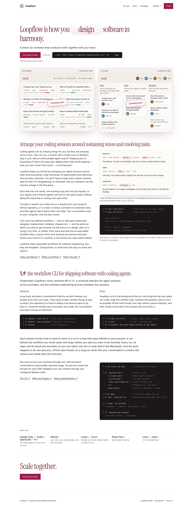
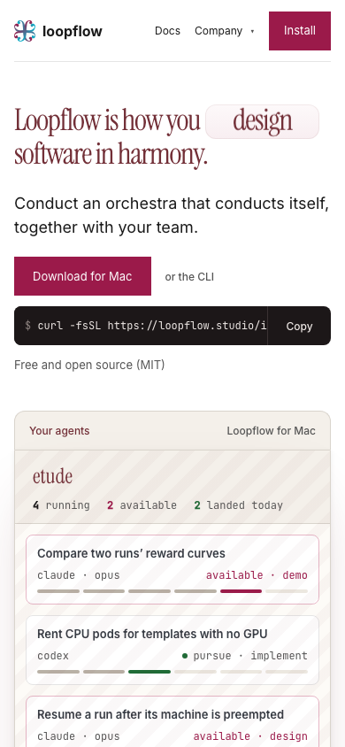
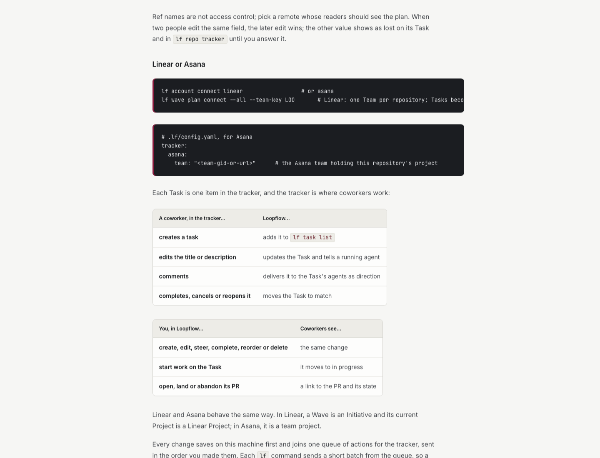
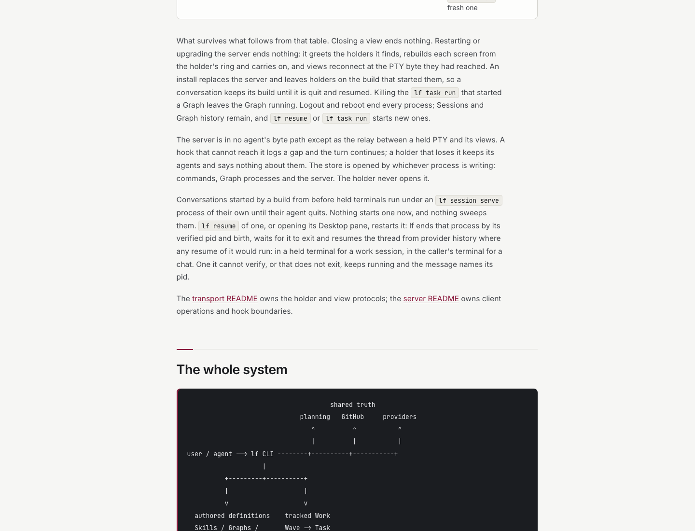
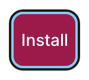
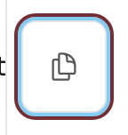
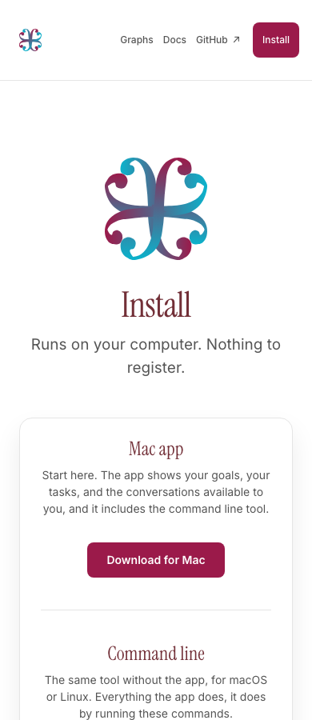

Surfaces: the website served by website/main.py, the generated docs/dev/index.html, and the Mac app's Ghostty defaults.
Wrote GhosttyManager.loopflowConfig to a file and ran /Applications/Ghostty.app/Contents/MacOS/ghostty +validate-config --config-file=…: exit 0. A misspelled key (font-thickn) fails with "unknown field", so the validator does check keys. The Mac app itself was not built or launched here.
Served on port 5077 and loaded in headless Chromium (Playwright). Every page returned 200 with no console or page errors. Every public page has no horizontal overflow on a phone.



Copy button: the clipboard held curl -fsSL https://loopflow.studio/install.sh | sh and the label changed to "Copied". The keyboard focus ring is a solid wine outline. No CSS custom property is used without being defined, and every class in home.html still has a rule.
When the menu was open, "Company" turned Pico blue rgb(1,88,135), a colour outside the palette. Main does this too (checked by serving main's stylesheet in place of the branch's). Fixed in style.css by also matching details[open] > summary. The same edit merged the duplicate nav rules and replaced var(--bg, var(--bg)) with var(--bg). After the fix the colour is rgb(26,26,26).
Opened from file:// at both widths: no overflow, no errors, and no broken relative links. After the stylesheet fix, scripts/render_architecture_html.py --check reported it stale. I regenerated it, and the check passes now.

Crawled every internal link from 17 entry routes with Playwright: 84 pages, all 200, no console errors. /design, /colors, /fonts answer 404, and neither sitemap.xml nor llms.txt lists them. No rendered page uses a deleted class (.btn-secondary, .btn-group, .page-hero, .next-steps*). render_architecture_html.py leaves docs/dev/index.html unchanged.
Keyboard focus on /download, branch against main's stylesheet: the Install button's ring was burgundy on wine on main and is near-black now; the copy button's ring is identical on both.




uv run --no-sync pytest tests/ in website/: 73 passed (after the regenerate)render_architecture_html.py --check: passes/download show a thin light-blue ring inside the burgundy outline. Main shows it too; it is outside this change.